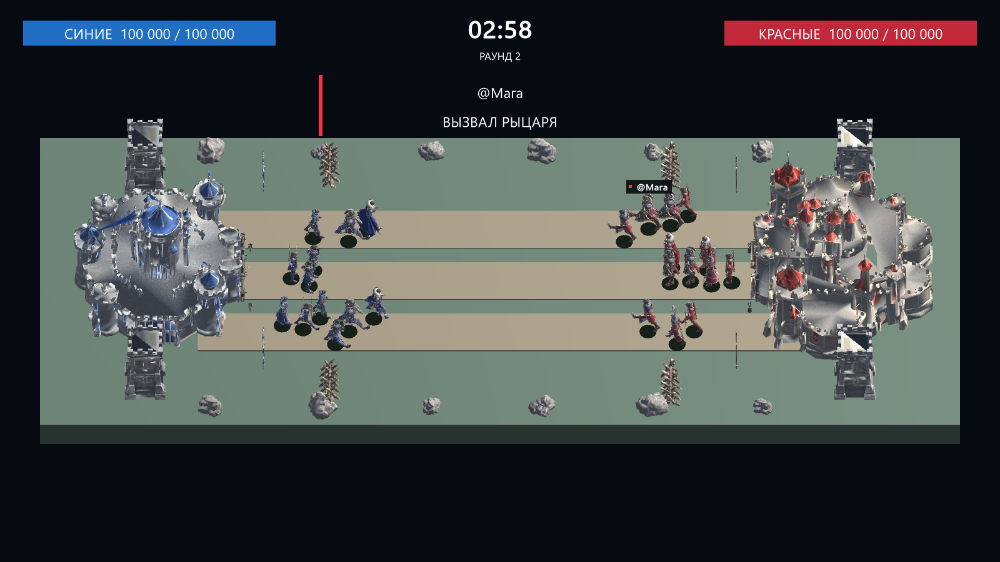
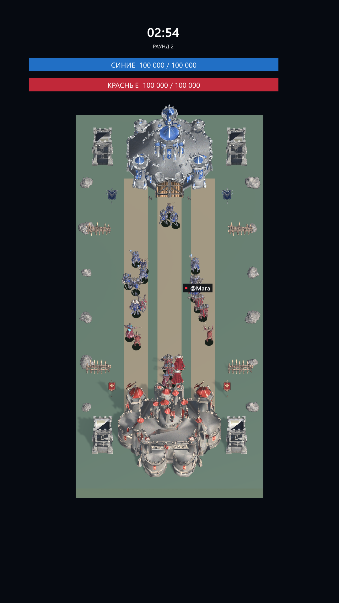

Support a kingdom
A viewer’s team stays with their session. Supported team commands can join RED or BLUE when an authorized provider supplies comments.
KINGDOMS LIVE is a functional Windows interactive battle game preparing for authorized LIVE platform integration. Two kingdoms. Three lanes. A battlefield shaped by its audience.
KINGDOMS LIVE brings a RED vs BLUE kingdom battle to the streaming screen. Armies advance across three lanes, engage enemy fighters and push toward the opposing castle.
The Windows game runs the battle automatically. Streamers control rounds and test interactions through a dedicated Russian operator panel.
A viewer’s team stays with their session. Supported team commands can join RED or BLUE when an authorized provider supplies comments.
Configured interaction events summon real units. Gift-spawned fighters display the viewer’s username above them.
Units fight nearby enemies first, then advance. The round ends with a result and the next battle begins automatically.
Rally behind the red banners. Reinforce your frontline and march toward the blue castle.
Defend the blue towers. Meet the opposing army and turn the tide across three lanes.
The core melee fighter, ready to meet the enemy frontline.
Ranged support that holds distance and fires into the battle.
A spellcaster bringing ranged magical attacks to the field.
An armoured melee fighter for close-range combat.
A major summon with a prominent viewer announcement.
A special fly-in, fire-breath and exit sequence.
Supported LIVE Gifts are intended to trigger entertainment actions, not cash rewards. Real gift identifiers are configured only from authorized provider data. Production gift access is not connected.

Desktop mode supports everyday control. The 1080 × 1920 portrait view keeps the castles, timer and announcements in a stream-focused composition.
F1 opens the operator controls. F2 changes the presentation without restarting the battle. Close F1 before capturing the public stream.
View actual Dragon event ↗
The local simulator demonstrates the event-to-gameplay flow. Integration with TikTok LIVE is subject to platform approval and authorized access.
No official partnership or approval is claimed. Production LIVE authorization is pending; the local game and simulator are functional.
Contact the developer ↗kingdomslive.game@gmail.com · Tajikistan